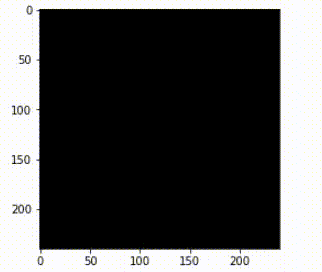

This project was originally plan on using 3D MRI scan (.mha) file to build a CNN model that is able to make, however, due to the lack of GPU, we were not able to perform the heavy computing required for a 2D CNN model. We tried other methods to take slices from the 3D MRI scan and train a model on the selected slices. But one issue with this approach is that we very likely miss the tumor by only examine the selected slices. For example, if we selected the middle slice of the scan, the tumor might locate on the top or the bottom of the brain, we would made a wrongly classification.
In the future, if our team has the access to a GPU machine with more processing power, it would be a good approach to look at 3D CNN model to taking in all layers of the scan files.